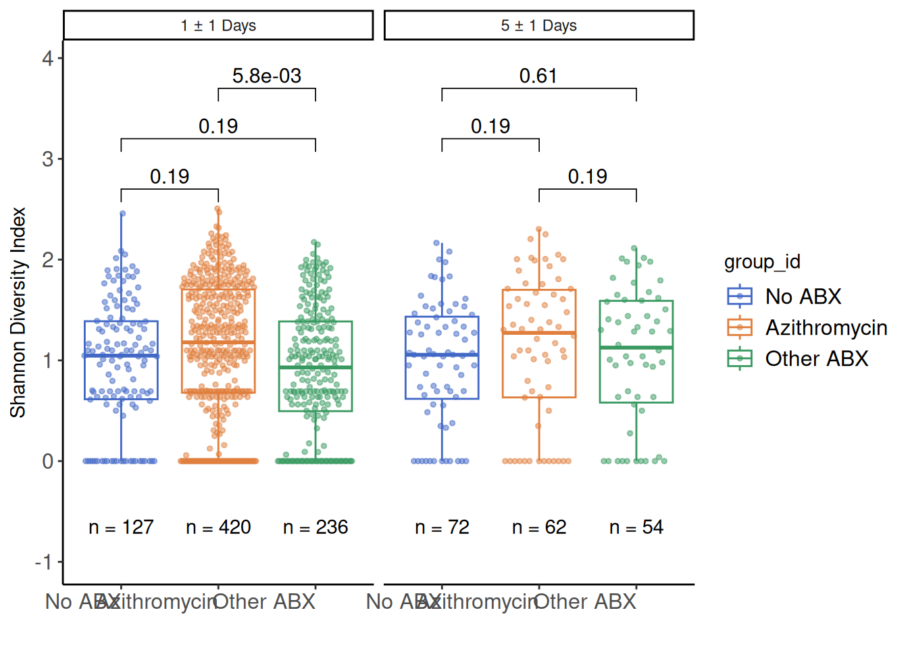

new <- as_labeller(c("Day 0-2" = "1 \u00b1 1 Days", "Day 4-6" = "5 \u00b1 1 Days"))
library(vegan)
AMR_prep_new<-AMR_NS_single %>%
pivot_wider(names_from = gene_name, values_from = dpm, values_fill = 0, id_cols = sample_id) %>%
as.data.frame()
rownames(AMR_prep_new)<-AMR_prep_new$sample_id
input_new<-AMR_prep_new[,-1]
shannon_new<-diversity(input_new,index="shannon") %>% as.data.frame()
shan_new<-shannon_new %>% dplyr::mutate(sample_id= rownames(shannon_new)) %>% set_names("shannon", "sample_id") %>% distinct()
adiv_data_new <- AMR_NS_single %>%
left_join(shan_new, by="sample_id") %>%
dplyr::select(sample_id, shannon) %>%
distinct() %>%
left_join(clinical_data %>% dplyr::select(sample_id, participant_id, event_date, ever_steroids, trajectory_group, discretized_admit_age_quantile, sex, enrollment_site)) %>%
dplyr::filter(!is.na(participant_id)) %>%
left_join(ABX_days_NS_ST_new %>% dplyr::select(sample_id, Azithromycin, Ceftriaxone, Vancomycin, Cefepime, Piperacillin_Tazobactam, Doxycycline, Meropenem, ABX_days)) %>%
dplyr::filter(!is.na(ABX_days)) %>%
dplyr::filter(sample_id %in% NS_group_timepoint_data_0306$sample_id) %>%
left_join(NS_group_timepoint_data_0306 %>% dplyr::select(sample_id, group_id, timepoint)) %>%
dplyr::filter(!is.na(group_id), !is.na(timepoint)) %>%
dplyr::mutate(Azith_other_one_zero = ifelse(group_id == "Azithromycin", 1,
ifelse(group_id == "Other ABX", 0, NA))) %>%
dplyr::select(sample_id,group_id,timepoint,shannon, event_date, participant_id, ever_steroids, trajectory_group, discretized_admit_age_quantile, sex, Azithromycin, Ceftriaxone, Vancomycin, Cefepime, Piperacillin_Tazobactam, Doxycycline, Meropenem, ABX_days,Azith_other_one_zero, enrollment_site) %>%
distinct()Joining with `by = join_by(sample_id)`
Joining with `by = join_by(sample_id)`
Joining with `by = join_by(sample_id)`stats_df_adiv_new <- adiv_data_new %>%
group_by(timepoint) %>%
wilcox_test(shannon ~ group_id) %>%
dplyr::mutate(y.position=c(2.7,3.2,3.7,2.7,3.2,3.7)) %>%
dplyr::mutate(p.adj = p.adjust(p = p, method = "fdr")) %>%
add_significance(p.col = "p.adj") %>%
dplyr::mutate(p_char = case_when(p.adj<0.01 ~ format(p.adj, scientific=TRUE, digits=2), p.adj>0.045 & p.adj<0.05 ~ as.character(format(round(p.adj,digits=3), nsmall = 2)), p.adj>0.0095 & p.adj<0.01 ~ as.character(format(round(p.adj,digits=3), nsmall = 2)), TRUE ~ as.character(format(round(p.adj,digits=2), nsmall = 2))))
sample_sizes_new <-adiv_data_new %>%
group_by(group_id,timepoint) %>%
summarise(n = n(), .groups = "drop")
### linear v1 ###
out_df <- data.frame()
for(comparison in list(c("Azithromycin", "No ABX"), c("Azithromycin", "Other ABX"), c("No ABX", "Other ABX"))){
for(act_timepoint in unique(adiv_data_new$timepoint)){
data<-adiv_data_new %>%
ungroup() %>%
filter(timepoint == act_timepoint) %>%
filter(group_id %in% comparison)
fit <- lme4::lmer(data=data, formula = shannon ~ group_id + event_date + ever_steroids + trajectory_group + discretized_admit_age_quantile + sex + Ceftriaxone + Vancomycin + Cefepime + Piperacillin_Tazobactam + Doxycycline + Meropenem + (1|participant_id))
fit2 <- lme4::lmer(data=data, formula = shannon ~ event_date + ever_steroids + trajectory_group + discretized_admit_age_quantile + sex + Ceftriaxone + Vancomycin + Cefepime + Piperacillin_Tazobactam + Doxycycline + Meropenem + (1|participant_id))
an <- anova(fit, fit2)
out_df <- rbind.data.frame(out_df, data.frame(name = "shannon", timepoint = act_timepoint, group1 = comparison[1],group2 = comparison[2],p = an$`Pr(>Chisq)`[2]))
}}refitting model(s) with ML (instead of REML)
refitting model(s) with ML (instead of REML)
refitting model(s) with ML (instead of REML)
refitting model(s) with ML (instead of REML)
refitting model(s) with ML (instead of REML)
boundary (singular) fit: see help('isSingular')
boundary (singular) fit: see help('isSingular')
refitting model(s) with ML (instead of REML)out_df <- out_df %>%
group_by(name, timepoint) %>%
mutate(p.adj = p.adjust(p, "fdr"))
stats_df_adiv_new2 <- stats_df_adiv_new %>%
select(-p.adj, -p) %>%
left_join(out_df) %>%
dplyr::mutate(p_char = case_when(p.adj<0.01 ~ format(p.adj, scientific=TRUE, digits=2), p.adj>0.045 & p.adj<0.05 ~ as.character(format(round(p.adj,digits=3), nsmall = 2)), p.adj>0.0095 & p.adj<0.01 ~ as.character(format(round(p.adj,digits=3), nsmall = 2)), TRUE ~ as.character(format(round(p.adj,digits=2), nsmall = 2))))Joining with `by = join_by(timepoint, group1, group2)`### linear v2 ###
out_df <- data.frame()
for(comparison in list(c("No ABX", "Azithromycin"),
c("Azithromycin", "Other ABX"),
c("No ABX", "Other ABX"))){
for(act_timepoint in unique(adiv_data_new$timepoint)){
if(all(comparison == c("No ABX", "Azithromycin"))){
formula_fit1 <- formula("shannon ~ group_id + sex + discretized_admit_age_quantile + event_date + ever_steroids + trajectory_group + Ceftriaxone + Vancomycin + Cefepime + Piperacillin_Tazobactam + Doxycycline + Meropenem + (1|enrollment_site/participant_id)")
formula_fit2 <- formula("shannon ~ sex + discretized_admit_age_quantile + event_date + ever_steroids + trajectory_group + Ceftriaxone + Vancomycin + Cefepime + Piperacillin_Tazobactam + Doxycycline + Meropenem + (1|enrollment_site/participant_id)")
} else if(all(comparison == c("No ABX", "Other ABX"))){
formula_fit1 <- formula("shannon ~ group_id + sex + discretized_admit_age_quantile + event_date + ever_steroids + trajectory_group + (1|enrollment_site/participant_id)")
formula_fit2 <- formula("shannon ~ sex + discretized_admit_age_quantile + event_date + ever_steroids + trajectory_group + (1|enrollment_site/participant_id)")
} else if(all(comparison == c("Azithromycin", "Other ABX"))){
## This is a model that only regresses the other six most common antibiotics for the Azithro group and not the Other ABX group (because these are the other antibiotics)
formula_fit1 <- formula("shannon ~ group_id + sex + discretized_admit_age_quantile + event_date + ever_steroids + trajectory_group + Azith_other_one_zero:Ceftriaxone + Azith_other_one_zero:Vancomycin + Azith_other_one_zero:Cefepime + Azith_other_one_zero:Piperacillin_Tazobactam + Azith_other_one_zero:Doxycycline + Azith_other_one_zero:Meropenem + (1|enrollment_site/participant_id)")
formula_fit2 <- formula("shannon ~ sex + discretized_admit_age_quantile + event_date + ever_steroids + trajectory_group + Azith_other_one_zero:Ceftriaxone + Azith_other_one_zero:Vancomycin + Azith_other_one_zero:Cefepime + Azith_other_one_zero:Piperacillin_Tazobactam + Azith_other_one_zero:Doxycycline + Azith_other_one_zero:Meropenem + (1|enrollment_site/participant_id)")
}
fit <- lme4::lmer(formula = formula_fit1,
data = adiv_data_new %>%
ungroup() %>%
#filter(name == shannon) %>%
filter(timepoint==act_timepoint) %>%
filter(group_id %in% comparison))
fit2 <- lme4::lmer(formula = formula_fit2,
data = adiv_data_new %>%
ungroup() %>%
#filter(name == shannon) %>%
filter(timepoint == act_timepoint) %>%
filter(group_id %in% comparison))
an <- anova(fit, fit2)
out_df <- rbind.data.frame(out_df,
data.frame(timepoint = act_timepoint,
group1 = comparison[1],
group2 = comparison[2],
p = an$`Pr(>Chisq)`[2]))
}
}refitting model(s) with ML (instead of REML)
boundary (singular) fit: see help('isSingular')
boundary (singular) fit: see help('isSingular')
refitting model(s) with ML (instead of REML)
refitting model(s) with ML (instead of REML)
boundary (singular) fit: see help('isSingular')
refitting model(s) with ML (instead of REML)
refitting model(s) with ML (instead of REML)
boundary (singular) fit: see help('isSingular')
boundary (singular) fit: see help('isSingular')
refitting model(s) with ML (instead of REML)out_df <- out_df %>%
group_by(timepoint) %>%
mutate(p.adj = p.adjust(p, "fdr"))%>%
ungroup()
write.csv(out_df, paste0("Single_timepoint_model_results_adiv.csv"))
stats_df_adiv_new2 <- out_df %>%
dplyr::mutate(p_char = case_when(p.adj<0.01 ~ format(p.adj, scientific=TRUE, digits=2), p.adj>0.045 & p.adj<0.05 ~ as.character(format(round(p.adj,digits=3), nsmall = 2)), p.adj>0.0095 & p.adj<0.01 ~ as.character(format(round(p.adj,digits=3), nsmall = 2)), TRUE ~ as.character(format(round(p.adj,digits=2), nsmall = 2)))) %>%
dplyr::mutate(y.position=c(2.7,3.2,3.7,2.7,3.2,3.7)) %>%
add_significance(p.col = "p.adj")
adiv_data_new%>%
dplyr::mutate(group_id = factor(group_id, c("No ABX", "Azithromycin", "Other ABX"))) %>%
ggplot(aes(x=group_id, y=shannon, color = group_id,group = group_id)) +
geom_boxplot(outlier.shape = NA) +
ggbeeswarm::geom_quasirandom(size = 1, alpha=0.5) +
facet_grid(~timepoint,scales = "free", labeller=new) +
theme_classic() +
theme(axis.text.x = element_text( vjust = 1, hjust=1, size=12),
axis.text.y=element_text(size=12),
legend.text=element_text(size=12)) +
scale_color_manual(values = ABX_colors) +
stat_pvalue_manual(stats_df_adiv_new2, label="p_char", size=4)+
scale_y_continuous(expand = expansion(mult = c(0.05, 0.15))) +
ylab("Shannon Diversity Index") + xlab("") +
geom_text(data = sample_sizes_new, aes(x = group_id, y =-0.5, label = paste("n =", n)), vjust = 1.5, color = "black")+
coord_cartesian(ylim=c(-1,3.5)) 
pdf(file = "3A.pdf", width=5, height=2.5)
adiv_data_new%>%
dplyr::mutate(group_id = factor(group_id, c("No ABX", "Azithromycin", "Other ABX"))) %>%
ggplot(aes(x=group_id, y=shannon, color = group_id,group = group_id)) +
geom_boxplot(outlier.shape = NA) +
ggbeeswarm::geom_quasirandom(size = 1, alpha=0.5) +
facet_grid(~timepoint,scales = "free", labeller=new) +
theme_classic() +
theme(axis.text.x = element_text( vjust = 1, hjust=1, size=12),
axis.text.y=element_text(size=12),
legend.text=element_text(size=12)) +
scale_color_manual(values = ABX_colors) +
stat_pvalue_manual(stats_df_adiv_new2, label="p_char", size=4)+
scale_y_continuous(expand = expansion(mult = c(0.05, 0.15))) +
ylab("Shannon Diversity Index") + xlab("") +
geom_text(data = sample_sizes_new, aes(x = group_id, y =-0.5, label = paste("n =", n)), vjust = 1.5, color = "black")+
coord_cartesian(ylim=c(-1,3.5))
invisible(capture.output(dev.off()))
mydata <-adiv_data_new %>%
select(group_id, timepoint, shannon)
write.csv(mydata, "~/3A.csv")